Chapter 1 Introduction to LyX
We will start off by understanding what LyX is an how we can use it for economic publication quality reports. We will discuss what is LyX and how we can install it onto our machine. Next, we will go through LyX’s Tutorial and use the Example document.
1.1 What you see is what you get (WYSIWYG) LaTex word processor
We are able to use LaTex documents without knowing too much LaTex ourselves with LyX. We can insert LaTex code into a LyX document, but with LyX this is not necesary. We will want to understand some of the basic of LaTex, so we can incorporate mathematical equations. We will cover this in the next chapter.
1.2 Install LyX
1.2.1 Windows Installation
Please see: https://wiki.lyx.org/Windows/WindowsSetup
1.2.2 OSX Installation
Please see: https://www.baeldung.com/cs/lyx-installation or https://wiki.lyx.org/Mac/Mac
1.3 LyX Tutorial
After we launch the LyX tutorial, we will want to open a new document. Go to File \(\rightarrow\) New or click on the following:
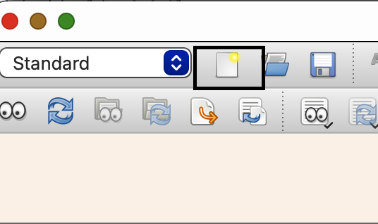
1.3.1 Select Document Class
Go to Document \(\rightarrow\) Settings.
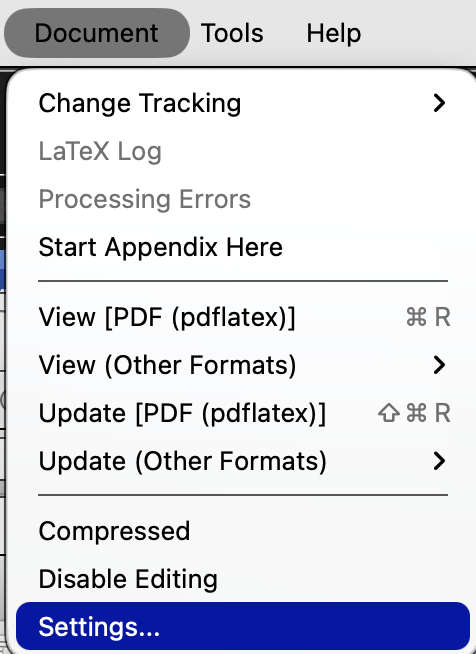
Make sure “Article Standard Class” is selected. This will provide the sections that we need for our document.
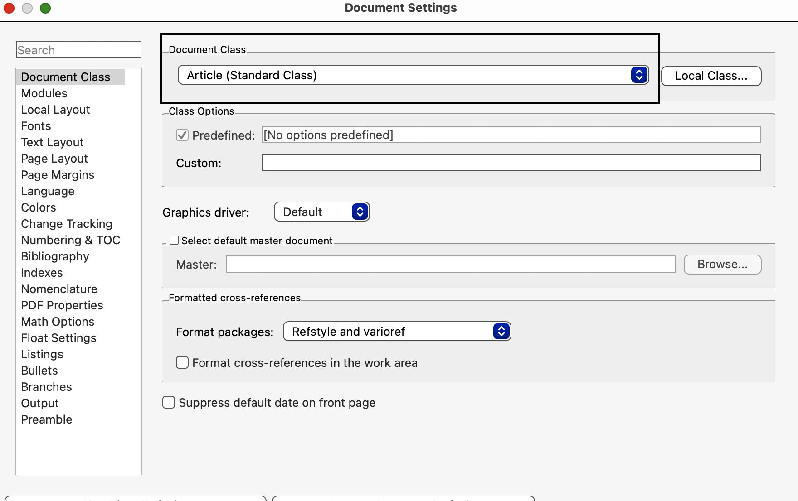
Now go back to the main window and look to the upper left to see the Envionment window. It should should the word “Standard”.
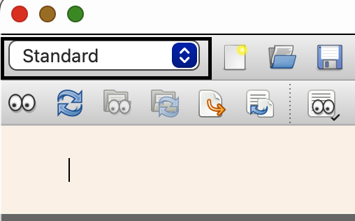
1.3.2 Sections
After selecting “Standard” in the Environment window, go to “Section” under “Sectioning”.
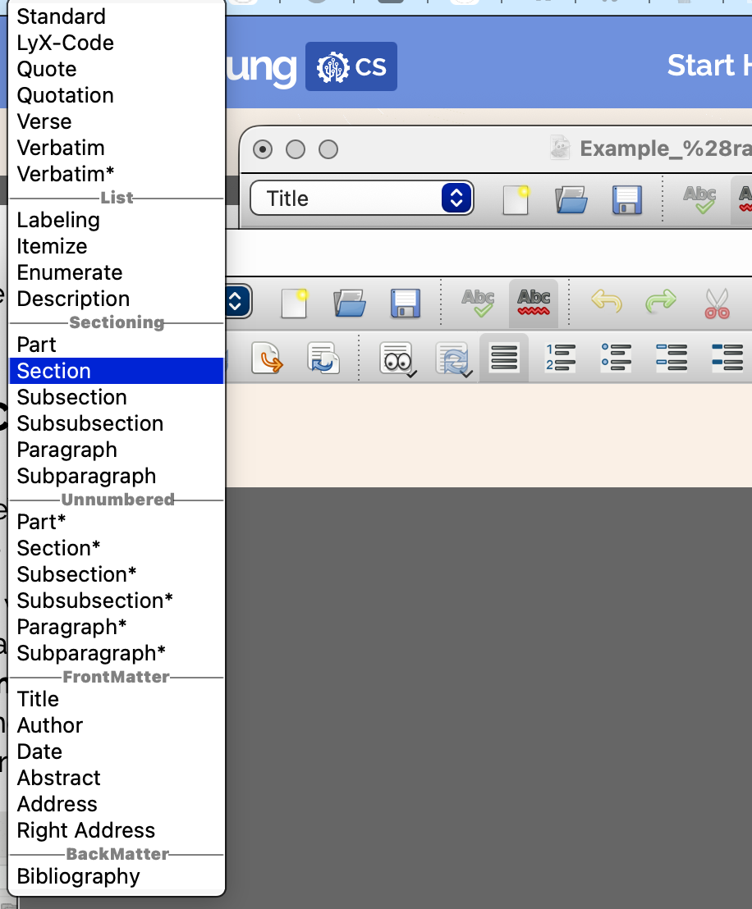
This will create a new section, which will look like this. Next, we can enter our section header, which will be “Introduction” for this example.
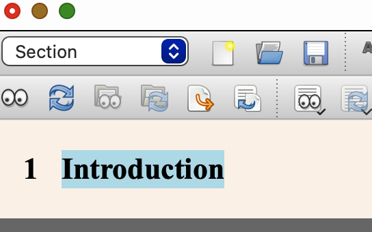
Next, press “Enter” and begin to type your introduction paragraph.
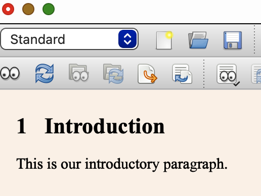
1.3.3 Subsections
After your introduction paragraph(s), press enter for a new paragraph. You will notice that the new paragraph is indented. We will type the word “Background” for our first subsection. It will look like the following:
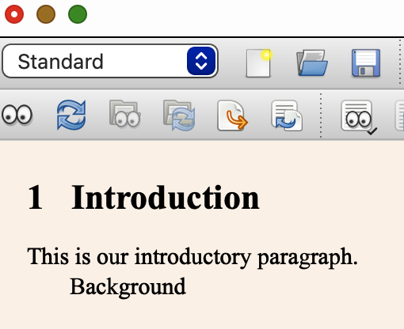
Now go back to the Environment window and select “Subsection” under “Sectioning”.
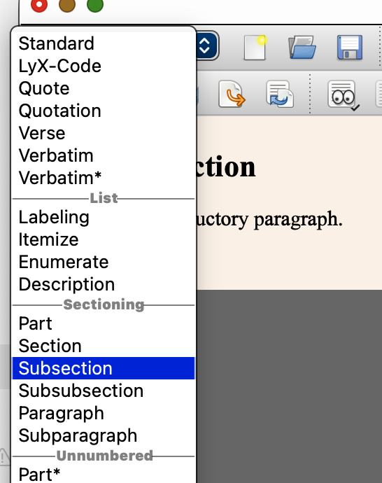
The result will be that “Background” becomes subsection 1.1.
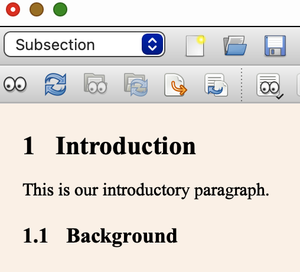
We can do this several subsections. We will create “Theory” and “Literature Review” subsections.
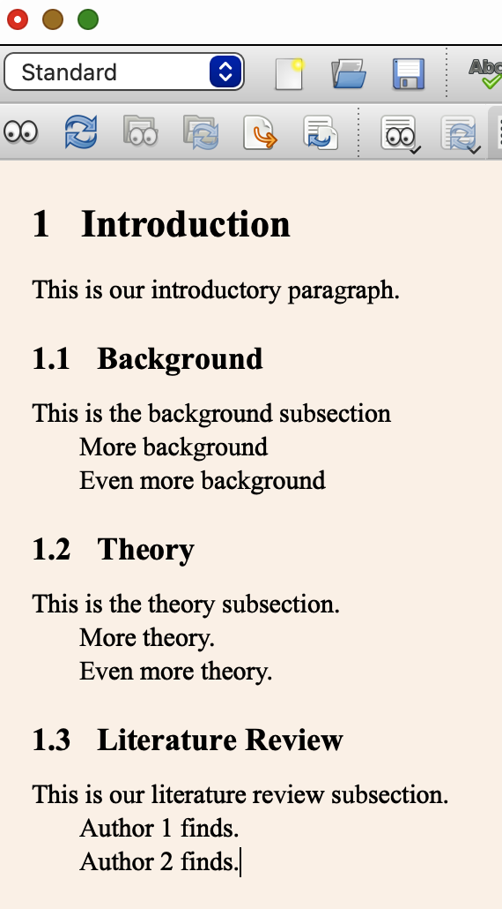
1.3.4 Preview our work
Now that we have created our first section. Let’s preview what our pdf will look like. Click the preview button to see the preview.
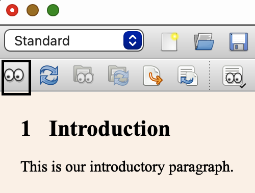
1.3.7 Table of Contents
We can add a table of contents (optional). As long as we are using sectioning, a table of contents will automatically generate once we select
1.3.8 Mathematical Equations
We can click the following button to insert a mathematical equation into a LyX document.
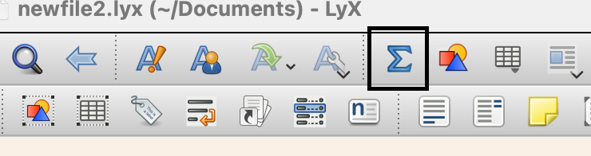
1.3.9 Insert LaTex Results
We can export our LaTex code that is produced from Stata with the estout commands. When you preview the document, you will notice that there is LaTex code that automatically labels the table number.
To insert a place to insert the LaTex output from Stata, click Insert \(\rightarrow\) Tex Code.
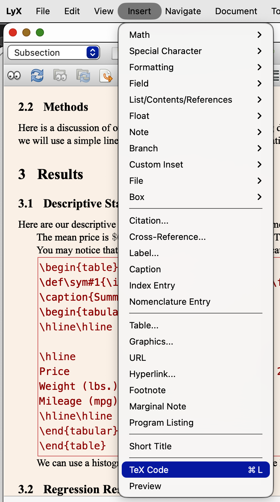
Now you will see a new box in your Lyx Document.
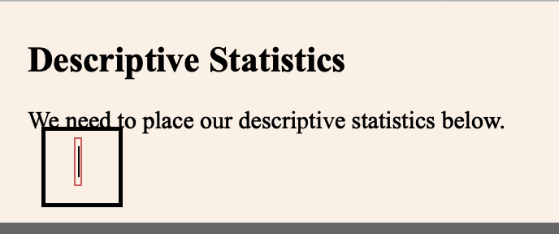
Next paste your LaTex code output from Stata into Lyx with right-click and Paste.
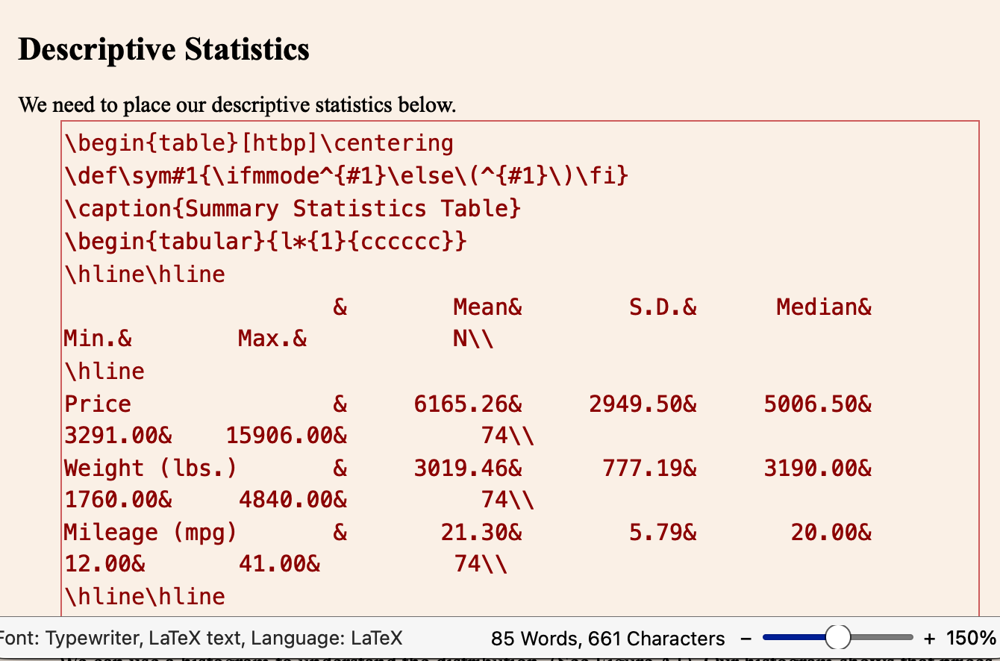
We will discuss estout in the next chapter.
1.3.10 Insert Figure
Our final tutorial will cover inserting graphs from Stata. We will cover exporting graphs from Stata a bit later.
We need to export our Stata histogram that we created. We will save it as a “.png” file.
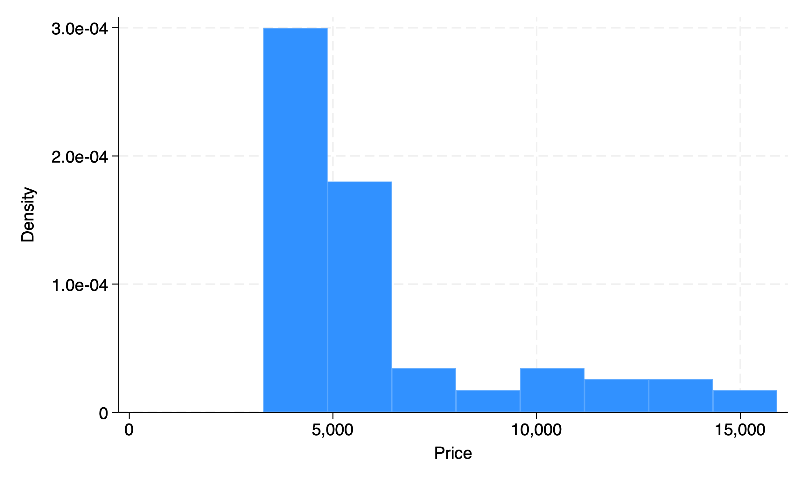
Go to Insert \(\rightarrow\) Float \(\rightarrow\) Figure.
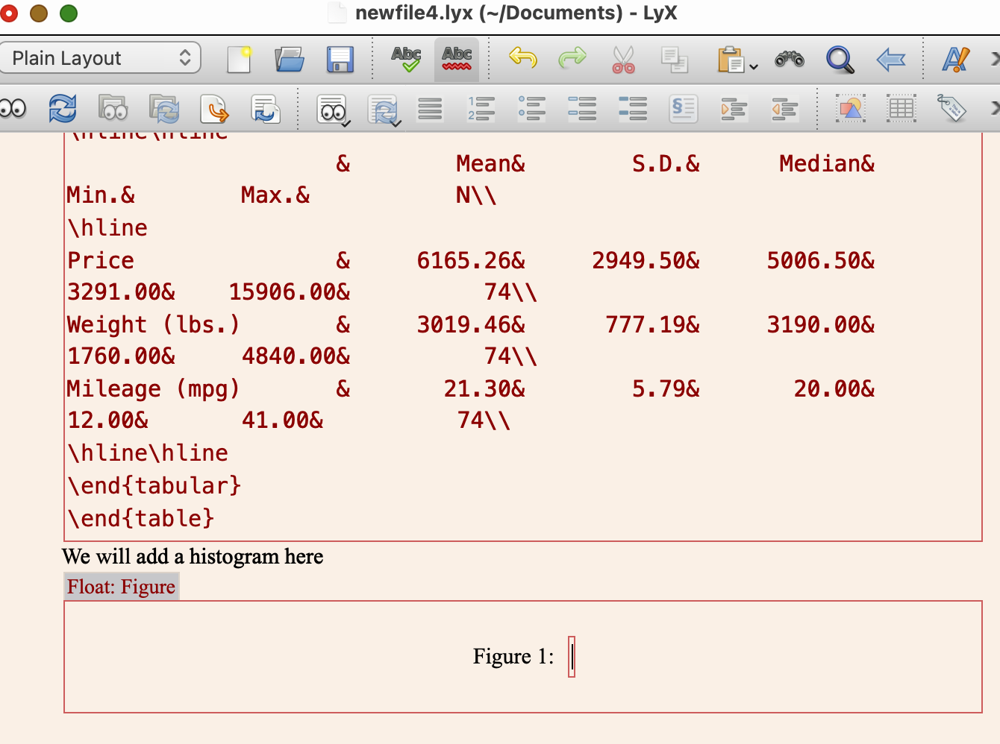
Now enter a title for the figure. We will use “Histogram of Automobile Price”.
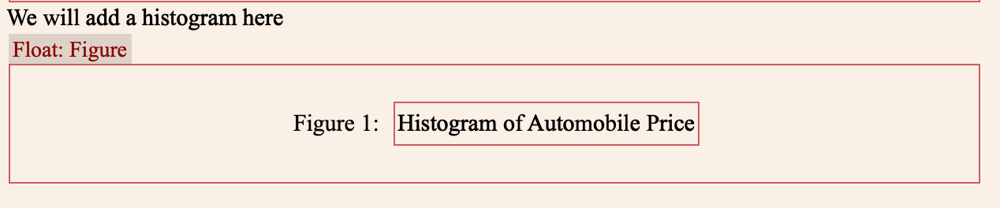
Next, we need to insert the histogram from Stata above the Figure 1: box but below Float Figure. Go to Insert \(\rightarrow\) Graphics.
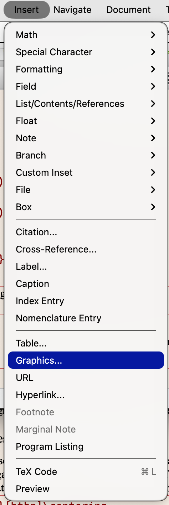
In the Graphics window, click browse and find your histogram “.png” file. Next, select “set width” and choose the size of your choice. Next, select “Column Width %” from the drop down menu next to “set width”. Click “OK”.
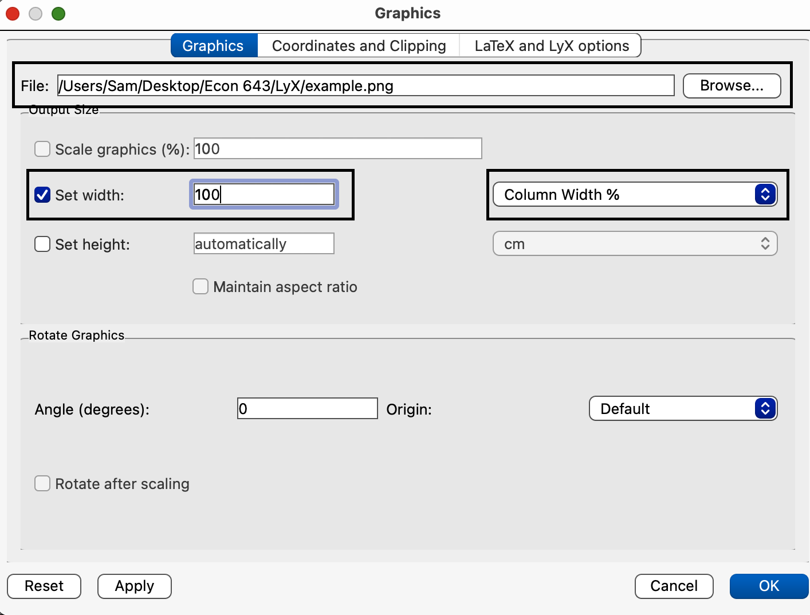
Your histogram will be inserted, but it may look funny.
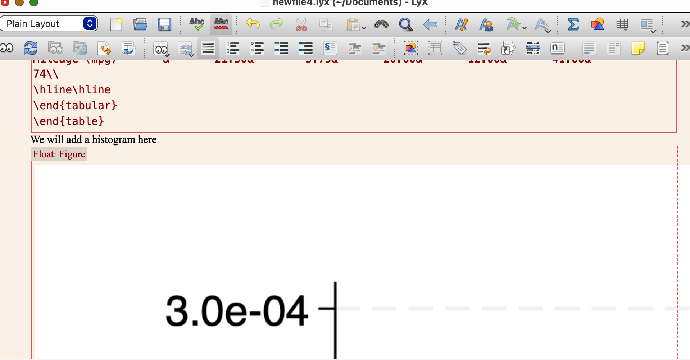
Click on preview to see how well the histogram was inserted. You may need to play around with the settings. I have the size of the Stata graph window makes the graphic file larger.
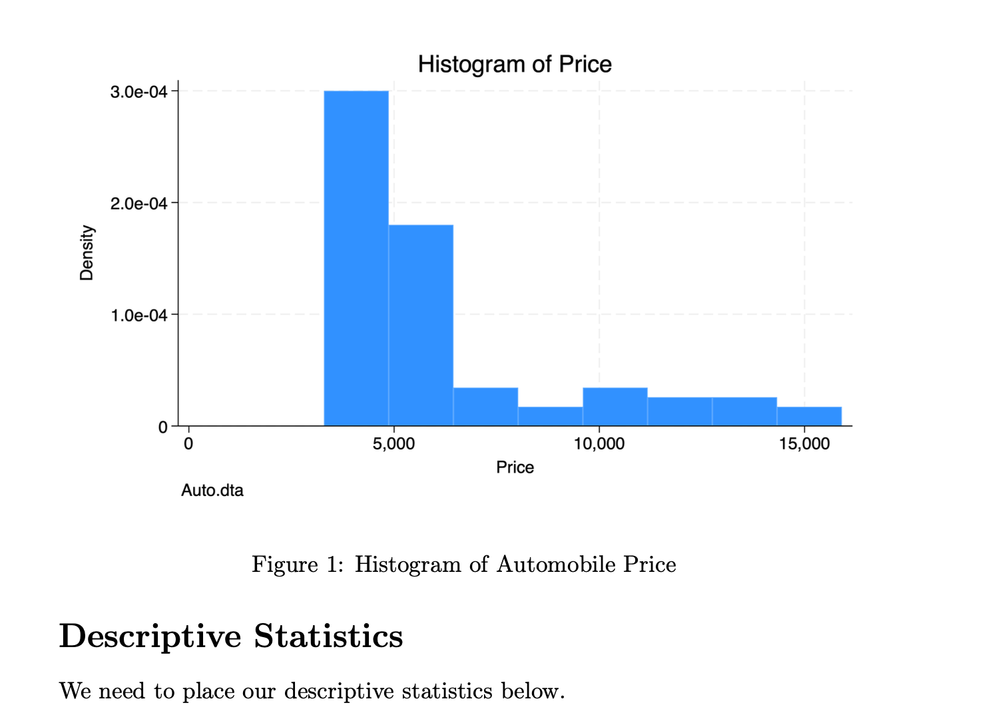